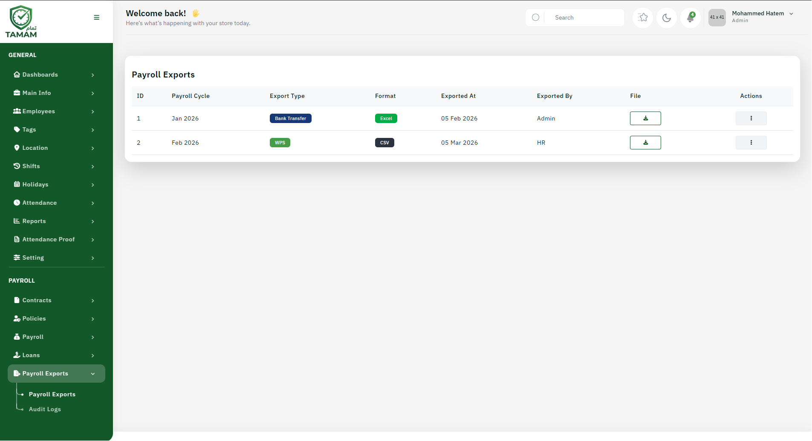

The Payroll Exports feature allows you to export payroll data for external use, analysis, and reporting. Audit Logs maintain records of all payroll system changes for compliance and security.

Payroll Export Options
You can export payroll data in various formats:
- Excel Format: For analysis and manipulation in spreadsheets
- CSV Format: For import to other systems
- PDF Reports: For distribution and archiving
- Bank File Format: For salary transfer to banks
- XML Format: For integration with other systems
Types of Exports
- Payroll Summary: Overview of earnings, deductions, net pay
- Employee Details: Individual employee payroll records
- Bank Transfer File: For salary disbursal
- Tax Reports: Tax withholding and filing information
- Statutory Reports: Compliance reports for government agencies
- Custom Reports: User-defined payroll reports
Exporting Payroll Data
- Go to Payroll Exports section
- Select payroll period
- Choose export type and format
- Select employees or departments
- Choose columns/fields to include
- Apply any filters or criteria
- Click "Export"
- Download exported file
Bank File Export
For salary transfers to employee bank accounts:
- Export in bank-specific format (NEFT, RTGS, SWIFT, etc.)
- Include employee bank account details
- Verify all details before submission
- Generate bank receipt confirmation
- Archive export file for records
Audit Logs Overview
Audit Logs track all activities in the payroll system:
- Who made changes to payroll data
- What changes were made
- When changes were made (date and time)
- Previous and current values
- IP address of user making changes
Accessing Audit Logs
- Go to Payroll Exports → Audit Logs
- Filter by date range
- Filter by user or action type
- Filter by employee or payroll period
- Review detailed log entries
- Export audit log for analysis
Audit Log Information
Each audit log entry includes:
- Timestamp (date and time)
- User who made the change
- Action performed (create, modify, delete, export)
- Record affected (employee, payroll period, etc.)
- Field changed and old/new values
- Status and result of action
Using Audit Logs for Compliance
- Track unauthorized changes
- Identify data discrepancies
- Verify system integrity
- Support regulatory audits
- Resolve payroll disputes
- Detect suspicious activities
Best Practices
- Regularly review audit logs for suspicious activities
- Archive audit logs for minimum 7 years
- Restrict access to sensitive export functions
- Verify exported data before external use
- Maintain secure storage of exported files
- Document all export activities
Data Security for Exports
- Encrypt exported files
- Use password protection for sensitive data
- Limit distribution to authorized personnel
- Track who receives exported data
- Securely delete temporary export files
Tip: Schedule regular audit log reviews to identify and address any payroll system issues before they become major problems.